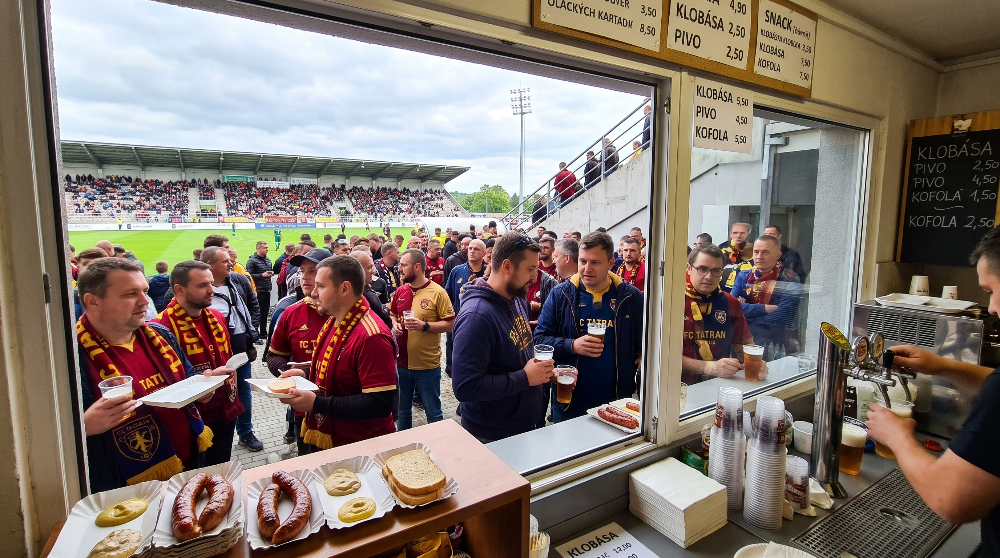

NOVÉ POSILY V LIGE

NAJLEPŠIE OBČERSTVENIE V NAŠEJ LIGE
PRED ZÁPASOM ROZHODUJE AJ DOBRÁ PRÍPRAVA
FANÚŠIKOVIA TVORIA ATMOSFÉRU NA IHRISKU
Pre zvolené filtre sa nenašli žiadne články.

Pre zvolené filtre sa nenašli žiadne články.